![]()
library(readxl)
dat <- read_xlsx("data/adcom.xlsx")Inferenza statistica
ADCOM 2025-2026
Ultimo aggiornamento: 03-26-2026
Inferenza, the big picture
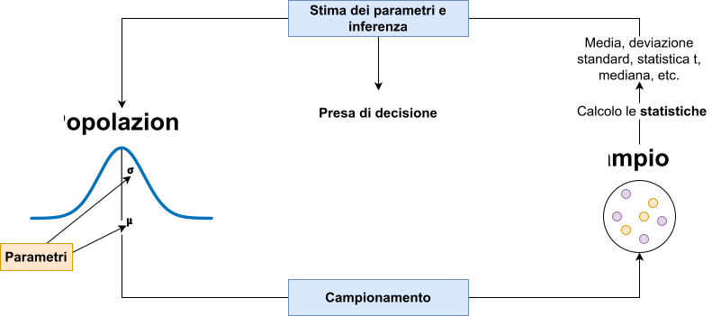
Inferenza
L’inferenza è un aspetto distinto ma legato al concetto di stima. L’inferenza riguarda un processo decisionale rispetto ad un parametro stimato.
Fare inferenza quindi significa prendere una decisione basandosi su una o più stime campionarie di parametri. Essendo l’inferenza basata su stime, la decisione inferenziale ha, per definizione, una componente d’errore.
In altri termini, quando si prende una decisione inferenziale (e.g., il trattamento funziona di più nel gruppo sperimentale, la correlazione è diversa da zero, etc.) è sempre necessario essere consapevoli della componente d’errore.
Approcci di inferenza statistica
L’inferenza statistica è caratterizzata sia storicamente ma anche attualmente da approcci diversi che possiamo riassumere in:
- Approccio Fisheriano
- Approccio di Neyman & Pearson
- Approccio basato sulla Likelihood (verosimiglianza)
- Approccio Bayesiano
Diciamo che in Psicologia, viene utilizzato un ibrido tra l’approccio Fisheriano e quello di Neyman & Pearson chiamato Null Hypothesis Significance Testing (NHST) e in minoranza l’approccio Bayesiano.
Per approfondire [#extra]
Per approfondire i problemi legati all’inferenza in Psicologia:
Gigerenzer, G. (1993). The Superego, the Ego, and the Id in Statistical Reasoning. In A Handbook for Data Analysis in the Behaviorial Sciences. Psychology Press. https://doi.org/10.4324/9781315799582
Gigerenzer (1993)
Gigerenzer, G. (2018). Statistical rituals: The replication delusion and how we got there. Advances in Methods and Practices in Psychological Science, 1, 198–218. https://doi.org/10.1177/2515245918771329
Gigerenzer (2018)
Errore di stima
Errore di stima
Il concetto principale per capire l’inferenza è quello di errore di stima. Possiamo distinguere due tipologie principali di errori di stima:
- errore sistematico: la mia stima è sistematicamente minore o inferiore rispetto al valore vero (parametro) che voglio stimare
- errore casuale: la mia stima è in media corretta ma qualche volta risulta maggiore, qualche volta minore in modo casuale
Tendenzialmente quando si analizzano dati, si cerca di usare metodi che evitano l’errore di tipo sistematico e riducono più possibile quello casuale. Quando abbiamo detto che la misurazione (o stima) di qualcosa è \(D = M + E\) (dati osservati = modello + errore), l’errore \(E\) che consideriamo è di tipo casuale.
Stima, popolazione e campione
Ritornando a parametri e statistiche, ogni statistica è una stima (con errore) del rispettivo parametro della popolazione.
Quando calcoliamo una media, una deviazione standard, etc. su un campione ricordiamoci sempre che, in ottica di stima, c’è una quota di incertezza. In modo generico definiamo \(\theta\) come il parametro incognito che stiamo stimando e \(S\) la sua stima fatta sul campione.
Chiamiamo \(E\) l’errore di stima ovvero una quantità che determina la precisione con cui \(S\) è una stima di \(\theta\). Questa quantità viene anche chiamata errore standard.
Dataset
Per capire al meglio il concetto di errore standard, facciamo un esempio con dei dati veri. Usiamo i dati del questionario fatto il primo giorno.
Trovate il dataset su Moodle o su https://stat-teaching.github.io/adcom/#data.
Dataset
Errore standard
Più formalmente ed in modo generico, possiamo dire che l’errore standard di una statistica è:
\[ SE = \sqrt{\frac{\sigma^2}{n}} = \frac{\sigma}{\sqrt{n}} \]
Sostanzialmente quindi l’errore standard dipende dalla variabilità intrinseca di un fenomeno \(\sigma^2\) e dal numero di osservazioni \(n\) utilizzate per stimare questo fenomeno.
Errore standard
Facciamo un esempio decomponendo la formula, se prendiamo due variabili del nostro dataset e vediamo la variabilità (con coefficiente di variazione):
[1] 0.0577459[1] 0.8430582Vediamo che la variabilità del numero di caffè bevuti è molto maggiore rispetto al numero di scarpe. Quindi, a parità di campione, la stima del numero di caffè bevuti sarà sempre più incerta. Tuttavia, aumentando il denominatore (\(n\)) possiamo diminuire il nostro errore casuale facendo variare meno la stima. Questo rapporto tra variabilità e numerosità è fondamentale per capire la qualità delle stime.
Errore standard della media
Abbiamo visto dallo script che l’errore standard della media si calcola come:
\[ SE = \sqrt{\frac{\sigma^2}{n}} = \frac{\sigma}{\sqrt{n}} \]
Ovviamente \(\sigma^2\) (la varianza della popolazione) viene stimata anch’essa dal campione. E’ importante capire che ogni statistica ha un suo errore standard che segue sempre questa logica. Le formule possono essere diverse (e non è necessario saperle) ma è sempre un rapporto tra varianza del fenomeno e numero di osservazioni usate per la stima.
Errore standard, nella pratica
A cosa serve l’errore standard nella pratica? Fondamentalmente a due processi:
- misurare e quindi comunicare l’errore di stima, fatta su un campione, di un certo parametro della popolazione
- prendere una decisione inferenziale riguardo il parametro, partendo dalla stima fatta sul campione. Non prendiamo una decisione sul campione (quello è noto, non incerto) ma sul parametro della popolazione. La decisione quindi è anch’essa incerta per definizione.
Distribuzione campionara
Un’altro concetto illustrato nell’esempio è quello di distribuzione campionaria. Nell’ipotesi di poter ripetere una misurazione un numero infinito (o molto elevato di volte) la distribuzione campionaria di una statistica è la distribuzione che si ottiene applicando quella statistica a tutti i campioni estratti. E’ un concetto teorico, nella pratica non possiamo ri-fare una misurazione infinite volte (a parte con le simulazioni, come nell’esempio)
- la media delle stime fatte su tutti i campioni possibili coincide con il parametro vero
- la deviazione standard delle stime (deviazione standard della distribuzione campionaria) rappresenta l’errore di stima
Chiaramente la stima in questo caso non ha errore sistematico (altrimenti 1 non sarebbe vero).
Distribuzione campionara
Possiamo indicare in modo generico la distribuzione campionaria di una statistica come:
\[ S \sim \mathcal{D}(\boldsymbol{\nu}) \]
Dove \(\sim\) significa distribuita come, \(\mathcal{D}\) è una certa distribuzione (esempio la Normale) e \(\boldsymbol{\nu}\) è un vettore di uno o più parametri (nel caso della Normale, \(\mu\) e \(\sigma\)).
Questa formulazione generica è solo utile a chiarire che il concetto di distribuzione campionaria è lo stesso ma \(\mathcal{D}\) può essere diverse cose. Nel t-test, ad esempio, \(\mathcal{D}\) è una t di Student.
Teorema del limite centrale
In alcuni casi, vale un teorema che si chiama teorema del limite centrale (TLC). Il teorema dice che con una numerosità campionaria sufficientemente grande1, la distribuzione campionaria di una statistica si può approssimare come una Normale:
\[ S \sim \mathcal{N}(\theta, \mbox{SE}_S) \]
Questo si legge come:
La distribuzione campionaria di \(S\) (una statistica generica, e.g., media) è distribuita come (\(\sim\)) una Normale con media \(\theta\) (il parametro) e deviazione standard l’errore standard.
Intervallo di confidenza
Un ultimo concetto importante è quello di intervallo di confindenza (CI). Una volta compresa la distribuzione campionaria, l’intervallo di confidenza non è altro un modo di riassumerla, oltre che con la media ma sopratutto con l’errore standard.
Formalmente, l’intervallo di confidenza si calcola come:
\[ \mbox{CI} = S \pm q SE_S \]
\(S\) è la stima, \(SE_S\) è l’errore standard. \(q\) è un moltiplicatore dell’errore standard. Determina il livello dell’intervallo di confidenza.
Intervallo di confidenza
Per capire \(q\) dobbiamo ripensare alla normale (dato il TLC). In particolare alla distribuzione normale standard (\(\mu = 0\) e \(\sigma = 1\)):
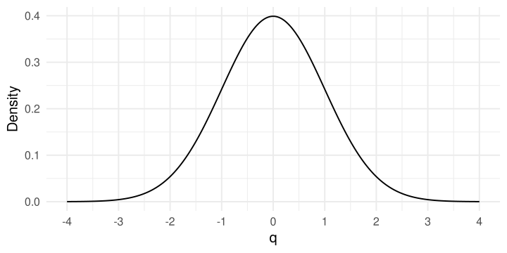
Intervallo di confidenza
Ogni distribuzione (normale) può essere convertita alla normale standard tramite la standardizzazione. Ad esempio, una normale con \(\mu = 100\) e \(\sigma = 15\):
Intervallo di confidenza
Quindi ad esempio, un valore \(q = 2\) corrisponde a \(x = \mu + q \sigma = 100 + 2 \times 15 = 130\):
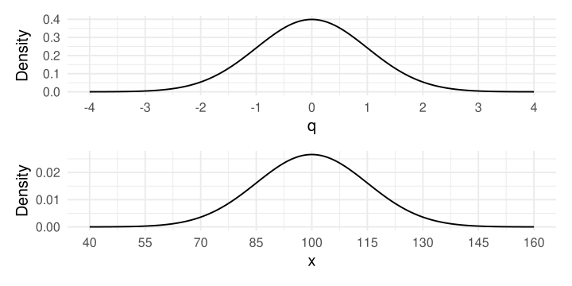
Intervallo di confidenza
Ora, esattamente come per i quantili (\(q\) sono quantili infatti) possiamo sapere quale \(q\) è associato ad una certa probabilità cumulata. Solitamente l’intervallo di confidenza si riporta al 5%. Quindi dobbiamo trovare \(q\) dove la probabilità sia \(p(x) \leq q = 0.05\). Essendo la normale simmetrica, si distribuisce il 5% tra le due code.
Con \(q\) di ~1.96 abbiamo una probabilità cumulata (a destra di \(q\) e a sinistra di \(-q\)) del 2.5%.
Intervallo di confidenza
Vediamolo sul grafico, evidenziamo l’area.
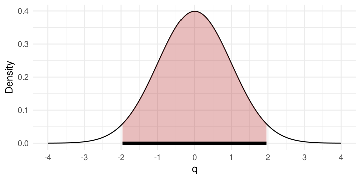
Intervallo di confidenza
Tornando al nostro esempio pratico, il CI è l’intervallo sulla distribuzione campionaria che contiene una certa percentuale (e.g., 95%) di valori.
Più formalmente:
L’intervallo di confidenza al \(p\%\) è quell’intervallo che, se ripetessi la misurazione un numero infinito di volte e calcolassi l’intervallo di confidenza, il \(p\%\) delle volte l’intervallo conterrebbe il valore vero \(\theta\).
Prendiamo una decisione
Ora, immaginiamo di voler prendere una decisione riguardo un parametro stimato. Ad esempio, facciamo l’inferenza che l’altezza media della popolazione è maggiore di 160cm. Anche qui noi conosciamo la “verità” ma assumiamo di basarci su un campione di numerosità \(n\). Quindi:
- estraiamo un campione
- calcoliamo l’errore standard e costruiamo la distribuzione campionaria secondo il teorema del limite centrale
Prendiamo una decisione
Calcoliamo le statistiche sul campione:
[1] 165.833333 8.630672 1.575738Ora possiamo anche costruire l’intervallo di confidenza al 95%, assumendo la normalità della distribuzione campionaria:
Prendiamo una decisione
Visualizziamo anche la distribuzione campionaria, in blu l’intervallo di confidenza e in rosso il valore di confronto.
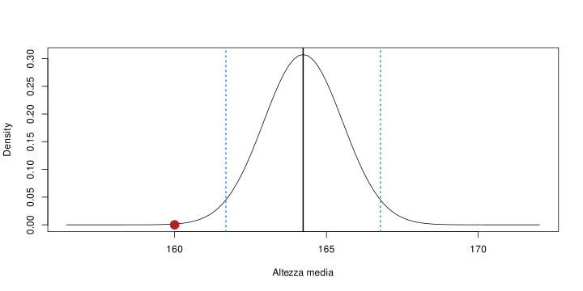
Prendiamo una decisione
Come prendiamo una decisione? La prima cosa che possiamo notare è la consistenza del valore 160cm rispetto alla distribuzione campionaria.
Se ripetessi la misurazione un numero infinito di volte, il valore 160cm sarebbe poco probabile.
In modo intuitivo, possiamo dire che sembra esserci evidenza che il valore 160cm sia poco consistente. Infatti la maggior parte delle medie è maggiore di 160.
Prendiamo una decisione
Vediamola in modo diverso. Immaginiamo un mondo dove la media della popolazione è nota ed è 160cm. Possiamo costruire la stessa distribuzione campionaria ma centrata su 160 e non sulla media del campione.
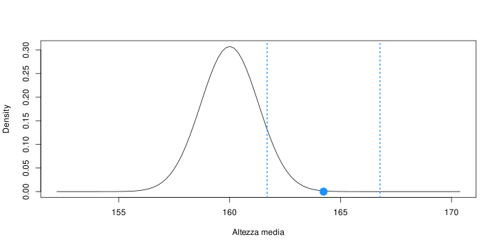
Prendiamo una decisione
Allo stesso modo possiamo dire che, se la popolazione avesse una media di 160cm, ottenere un campione con media \(\bar{x}\) 165.83 è poco probabile.
Possiamo anche calcolare la probabilità di ottenere un risultato uguale o maggiore a quello ottenuto, nell’ipotesi che la media della popolazione sia 160cm.
[1] 0.0001069663Questa probabilità che abbiamo calcolato, si chiama p value.
Statistica test
Solitamente non si lavora con le statistiche grezze ma si calcola una statistica test (come la statistica \(t\) ad esempio). Questa statistica test, come tutte le altre, ha una distribuzione campionaria e quindi un errore standard. Ad esempio:
\[ z = \frac{\bar{x} - \mu}{SE_{\bar{x}}} \]
Questa statistica test semplicemente standardizza la differenza tra la media del campione e la media della popolazione che ipotizziamo (per il confronto) dividendo per l’errore standard.
Prendiamo una decisione
Il vantaggio è che, a prescindere da \(\bar{x}\) e \(\mu\), questa statistica test standardizzata ha sempre la stessa distribuzione campionaria:
\[ z = \frac{\bar{x} - \mu}{SE_{\bar{x}}} \]
\[ z \sim \mathcal{N}(0, 1) \]
Ovvero una normale standard (\(\mu = 0\), \(\sigma = 1\)). Infatti possiamo calcolare il p value:
Normale, disclaimer
Questa è la logica per qualsiasi test statistico.Nella pratica a volte si usano altre distribuzioni come la \(t\) di Student. La ragione principale è che l’approssimazione normale, sopratutto per campioni piccoli non è sempre giustificata.
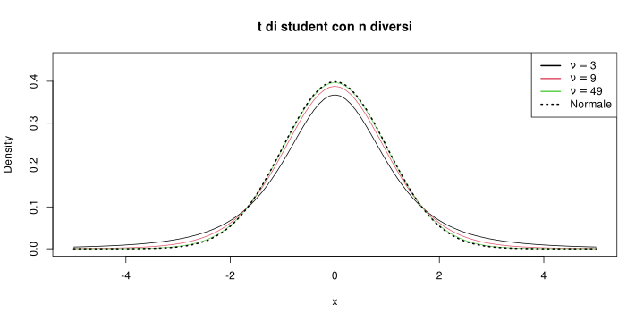
Errori decisionali
Quello che abbiamo fatto artigianalmente è un processo inferenziale:
- Abbiamo definito un’ipotesi nulla \(H_0\) (\(\mu_0 = 160\), popolazione).
- Basandoci su \(n\) e su \(s\) del campione abbiamo costruito la distribuzione campionaria (assumendo che \(H_0\) sia vera)
- Abbiamo calcolato la probabilità di trovare un risultato uguale o maggiore di quello campionario, ovvero il p value.
Possiamo intuire che tanto più il p value è piccolo tanto più il risultato del campione è soprendente assumendo \(H_0\) come vera. Ma quanto piccolo deve essere il p value per rifiutare \(H_0\)?
Errori decisionali
Fissiamo questo valore (totalmente a caso 😉) che chiamiamo \(\alpha = 0.05\). Questa è la nostra soglia decisionale. Se il p value \(p\) è minore di \(\alpha\) allora arbitrariamente decidiamo che i dati non sono consistenti con \(H_0\), e la rifiutiamo.
Al contrario, se \(p\) è maggiore di \(\alpha\) allora non possiamo rifiutare \(H_0\). Ricordate che non esiste, in questo framework inferenziale, il concetto di accettare \(H_0\). \(H_0\) è vera per definizione nel momento in cui calcoliamo \(p\).
Quindi, assumendo vera \(H_0\) significa che c’è sempre una probabilità che per quanto estremo sia il risultato del campione questo venga da una popolazione con media \(\mu_0\). Rifiutare in questo caso signica commettere un errore inferenziale. Errore noto come falso positivo o errore primo tipo.
Tutto così semplice?
Non esattamente. Ci sono alcuni problemi con questo approccio:
- Abbiamo definito solo \(H_0\), non abbiamo ipotesi di come potrebbe essere il mondo alternativo dove \(H_0\) è falsa.
- \(p\) si basa su \(z\) (o statistica test in generale) che a sua volta dipende da un numeratore e denominatore. Lo stesso \(p\) si può ottenere con infinite combinazioni.
- \(\alpha\) è stato scelto in modo arbitrario
Tutte ma non solo queste problematiche hanno contribuito a quella che viene definita crisi di replicabilità. L’uso improprio dell’inferenza è una delle principali ragioni.
Tutto così semplice?
Lo stesso p value può essere ottenuto con scenari molto diversi. Quindi il p value da solo non è sufficiente.
Ipotesi alternativa
Ci manca un’ipotesi alternativa \(H_1\) nei termini di un valore plausibile del parametro \(\mu_1\) nel mondo dove \(H_0\) è falsa e \(H_1\) è vera. Importante, questo non è il valore del campione, ma un valore ipotetico e plausibile del parametro.
Attenzione che dire \(H_0: \mu = 160\) e \(H_1: \mu > 160\) non è sufficiente. \(H_1\), nel momento in cui definiamo l’ipotesi alternativa deve essere un valore definito ed empiricamente plausibile.
Il motivo è che oltre all’errore di primo tipo o falso positivo abbiamo anche altri errori e questi sono definiti quando \(H_1\) è definito.
Ipotesi alternativa
Restando sull’esempio, immaginiamo che \(H_1: \mu = 165\). Quindi la media della popolazione è 170cm e non 160 (il valore nullo). Abbiamo quindi due distribuzioni campionarie:
- distribuzione campionaria della statistica test quando \(H_0\) è vera (e quindi \(H_1\) è falsa)
- distribuzione campionaria della statistica test quando \(H_1\) è vera (e quindi \(H_0\) è falsa)
Inoltre abbiamo il nostro valore di \(\alpha\) per la decisione inferenziale. Abbiamo costruito un sistema di verifica di ipotesi molto simile a quello proposto da Neyman e Pearson.
Ipotesi alternativa
Nel nostro caso, ipotizziamo che \(H_1: \mu = 165\). Quindi possiamo disegnare entrambe le distribuzioni.
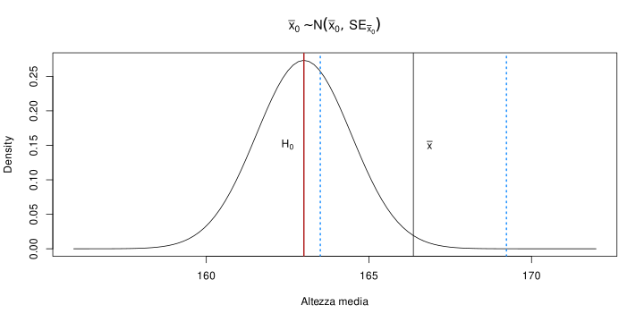
Ipotesi nulla e alternativa
Quindi possiamo riassumere questo sistema in una tabella di contingenza 2x2:
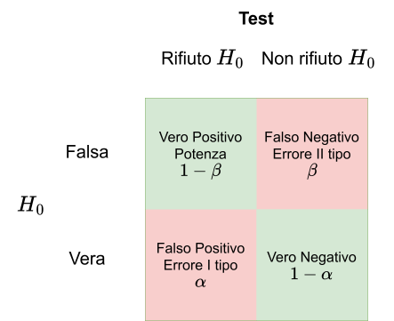
Ipotesi nulla e alternativa
Quindi, gli aspetti principali sono:
- \(H_0\) e \(H_1\) sono mutualmente esclusive
- La potenza è la probabilità condizionata di rifiutare \(H_0\) quando questa è falsa (quindi assumendo vera \(H_1\))
- L’errore di primo tipo è la probabilità di riufiutare \(H_0\) quando questa è vera. Viene di solito fissato ad un valore
- il p value è la probabilità di ottenere un risultato uguale o più estremo se \(H_0\) è vera
L’obiettivo di un test è avere più potenza possibile mantenendo un livello accettabile di \(\alpha\).
Come si calcola la potenza?
Di base, il calcolo è simile a quello del p value ma basato sull’ipotesi alternativa. Facciamo un esempio1:
mu0 <- 160
mu1 <- 165
se <- sd(dat$altezza) / sqrt(nrow(camp))
alpha <- 0.05
z <- (mu1 - mu0) / se
z # differenza tra le due ipotesi, standardizzata
## [1] 3.514177
zcrit <- abs(qnorm(alpha/2)) # valore critico standardizzato
zcrit
## [1] 1.959964
# spostiamo i valori critici della normale standard in funzione della
# differenza tra le due ipotesi (H1)
(power <- pnorm(-zcrit + z) + pnorm(zcrit + z, lower.tail = FALSE))
## [1] 0.9399333In questo caso la potenza è 0.94, quindi se fosse vera \(H_1: \mu = 165\) avremmo probabilità del 94% di trovare l’effetto. Trovare l’effetto qui significa essere in grado di distinguerlo da quello nullo ovvero \(\mu_0 = 160\).
Da cosa dipende la potenza?
La potenza dipende fondamentalmente da due aspetti:
- il valore di \(\alpha\): un valore di \(\alpha\) maggiore significa una statistica test minore (in valore assoluto) e quindi maggiore probabilità di rifiutare \(H_0\). Però \(\alpha\) generalmente è fisso e deciso a priori.
- il grado di separazione tra le due ipotesi, quindi la statistica test. Questa a sua volta dipende da:
- numeratore: quindi il grado di separazione grezzo delle ipotesi
- denominatore (errore standard): quindi la numerosità campionaria \(n\) e \(\sigma\) ovvero il grado di variabilità del fenomeno.
Quindi nella pratica, essendo \(\alpha\) definito a priori, la separazione tra le ipotesi \(\mu_1 - \mu_0\) definito a priori e \(\sigma\) stimato (\(s\)), l’aspetto cruciale è la numerosità campionaria \(n\).
Effect size
Un ultimo aspetto importante nell’inferenza è il concetto di effect size. L’effect size non è altro che una statistica come le altre ma che viene usata essendo direttamente e “facilmente” interpretabile. Ci sono due tipo di effect size:
- standardizzati: ad esempio il Cohen’s \(d\), correlazione, odds ratio, etc. Sono degli effect size che non dipendono dall’unità di misura originale. A prescindere da cosa sto correlando, una correlazione di 0.5 è intepretata, statisticamente, allo stesso modo.
- non standardizzati: ad esempio la differenza semplice tra due medie. Dal punto di vista prettamente statistico sono preferibili ma non sempre sono intepretabili. Dire che due persone differiscono di 15cm in altezza è chiaro (effetto grande). Dire che due persone differiscono di 4 punti su una scala di depressione è meno chiaro.
Effect size, Cohen’s \(d\)
Un esempio classico riguarda il Cohen’s \(d\) (o differenza tra medie standardizzate). Immaginiamo di avere la situazione di prima con \(\mu_0 = 160\) e \(\mu_1 = 165\). La differenza tra medie grezza è \(\Delta = \mu_1 - \mu_0 = 5\).
Per standardizzare questa differenza tenendo conto del grado di variabilità possiamo dividere \(\Delta\) per la deviazione standard della popolazione \(\sigma\). Quindi:
\[ \delta = \frac{\mu_1 - \mu_0}{\sigma} \]
Quindi la differenza ora è espressa in unità standardizzate di deviazione standard e non più in centimetri.
Effect size, Cohen’s \(d\)
Proviamo a calcolarlo:
[1] 0.6415981Quindi \(\mu_1\) è 0.64 deviazioni standard dall’ipotesi nulla. Questo valore è facilmente confrontabile a prescindere dal tipo di variabile.
Cohen’s \(d\) e statistica test
Abbiamo definito prima una statistica test come:
\[ z = \frac{\mu_1 - \mu_0}{SE_{\mu_1}} = \frac{\mu_1 - \mu_0}{\frac{\sigma}{\sqrt{n}}} \]
La formula è simile ma \(\delta\) non contiene \(n\). Infatti, l’effect size è semplicemente una trasformazione standardizzata mentre la statistica test ingloba anche l’informazione della numerosità.
Il punto è proprio questo, uno stesso effect size può essere (come per tutte le altre statistiche) stimato più o meno precisamente e quindi avere più o meno errore standard.
Cohen’s \(d\)
Anche se standardizzato, questo effect size non è facilmente interpretabile come una correlazione (tra -1 e 1). Ci sono dei benchmark che possono essere utili:
- La differenza di altezza media tra maschi e femmine in Olanda è di 13cm o Cohen’s \(d = 2\) (Schönbeck et al., 2012)1
- Ci sono delle stime degli effect size medi in Psicologia attorno a 0.4 (Richard et al., 2003)
Queste sono solo indicazioni generali, ogni ambito di ricerca può avere degli effetti plausibili. Ovviamente diffidate degli effetti troppo ottimisti, sono poco plausibili.
Cohen’s \(d\) e potenza
Ora che abbiamo un valore standardizzato per esprimere il grado di separazione delle ipotesi \(H_0\) e \(H_1\), vediamo come è legato alla potenza.
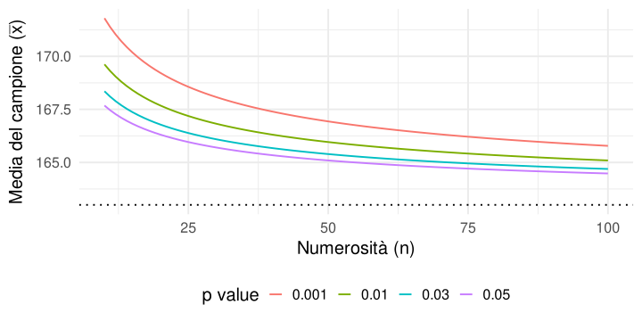
Aspetti cricici
Il primo aspetto da tenere a mente è: qualunque effetto (diverso da zero) con un certo \(n\) sarà associato ad un \(p \leq \alpha\), quindi sarà significativo. Quindi il p value, da solo, non ci dice chiaramente la grandezza (e quindi la rilevanza) dell’effetto.
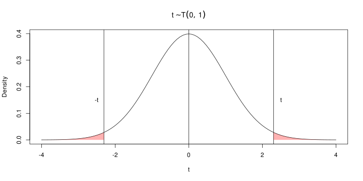
Aspetti cricici
Allo stesso tempo, se abbiamo campioni di numerosità limitata non è possibile stimare in modo affidabile effetti molto piccoli.
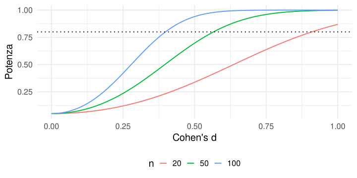
Aspetti critici
Un ultimo aspetto critico riguarda la selezione per la significatività. Se vengono pubblicati solo i risultati con \(p \leq \alpha\) questo porta ad una sovrastima dell’effetto.
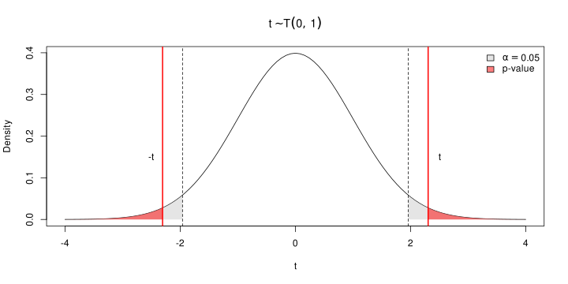
Ricapitolando
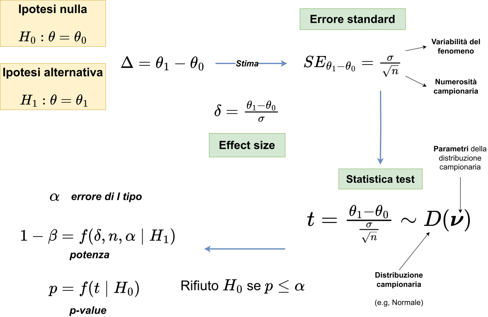
Ricapitolando
- L’inferenza dipende dalla grandezza dell’effetto e dalla qualità della stima (errore standard). Effetti più complessi (test ad un campione vs a due campioni) hanno generalmente potenza minore.
- La distribuzione campionaria non è sempre normale. Di solito si usa anche la t di Student ma la logica generale è la stessa.
- La potenza è una funzione che dipende da diversi parametri. Effetti piccoli (comuni in Psicologia), richiedono campioni grandi.
- Il p value da solo non è informativo rispetto alla rilevanza statistica ed empirica dell’effetto.
- Effetti grandi con campioni piccoli sono nella maggior parte dei casi sovrastime e non dovrebbero essere considerati affidabili.
Bibliografia
Gigerenzer, G. (1993). The Superego, the Ego, and the Id in Statistical Reasoning. In A Handbook for Data Analysis in the Behaviorial Sciences. Psychology Press. https://doi.org/10.4324/9781315799582
Gigerenzer, G. (2018). Statistical rituals: The replication delusion and how we got there. Advances in Methods and Practices in Psychological Science, 1, 198–218. https://doi.org/10.1177/2515245918771329
Richard, F. D., Bond, C. F., Jr, & Stokes-Zoota, J. J. (2003). One hundred years of social psychology quantitatively described. Review of General Psychology: Journal of Division 1, of the American Psychological Association, 7, 331–363. https://doi.org/10.1037/1089-2680.7.4.331
Schönbeck, Y., Talma, H., Dommelen, P. van, Bakker, B., Buitendijk, S. E., HiraSing, R. A., & Buuren, S. van. (2012). The world’s tallest nation has stopped growing taller: the height of Dutch children from 1955 to 2009. Pediatric Research, 73, 371–377. https://doi.org/10.1038/pr.2012.189